Substituições de alimentos
Para que serve a lista de substituição?
O uso da lista de substituição faz parte do processo de educação nutricional, pois é através dela que o paciente consegue entender melhor os grupos alimentares e criar autonomia para fazer suas escolhas nas refeições do dia-a-dia.
A lista de substituição serve como um guia, onde os alimentos são separados conforme os grupos alimentares e cada grupo possui uma média calórica ou uma média da quantidade de determinado nutriente, como por exemplo, carboidratos ou proteínas. Dessa forma é possível que o paciente tenha mais autonomia na hora de fazer suas escolhas alimentares conforme os grupos definidos no planejamento, além de permitir maior flexibilidade no cardápio, possibilitando sair da monotonia alimentar.
Determinação de equivalências e exemplos
A lista de substituição de alimentos (LSA) costuma tomar como referência as medidas da Tabela Brasileira de Composição de Alimentos (TACO). Assim, após conhecer o perfil de seu paciente, ter dados sobre seu metabolismo basal e sobre as necessidades calóricas e nutricionais dele, é possível determinar as principais equivalências.
Frutas
O café da manhã do plano alimentar tem uma porção de frutas com um pouquinho de aveia? Mostre a seu paciente que ele não precisa comer religiosamente uma banana média, por exemplo. Em vez disso, adicione uma lista de quantidade proporcional de outras frutas.
Cabem aqui 20 unidades de morango, uma fatia grossa de melancia ou uma unidade média de mexerica. A variedade, além de tornar a rotina mais saborosa, permite que sejam aproveitados os itens de cada safra.
A medida das porções, ademais, evita que haja excesso de carboidratos consumidos diariamente, nesse caso, já que frutas diferentes podem ter índices glicêmicos elevados.
Carnes
Para pacientes que não seguem padrões alimentares veganos ou vegetarianos, a lista de carnes, uma das principais fontes de proteína de uma dieta onívora, requer bastante atenção. O excesso que o paciente pode cometer, afinal, ao errar as proporções, tende a atrapalhar seus objetivos com o plano.
Um filé médio de peixe ou de frango grelhado, por exemplo, corresponderia a uma fatia menor daquela derivada de carne vermelha, rica em gorduras saturadas, com as quais se deve ter mais cautela.
Oleaginosas
Queridinhas dos lanches de muitos pacientes que têm procurado seguir um estilo de vida mais saudável, as oleaginosas são pequenas, mas bastante calóricas! Embora tragam diversos benefícios, como presença de ômega 3, vitaminas, fibras alimentares e até mesmo proteínas, especialmente a amêndoa, elas devem ser incluídas na alimentação com parcimônia.
Para cada quatro unidades de castanha-do-pará, a substituição pode ser de sete unidades de amêndoas ou avelãs. A precisão, afinal, faz diferença para o perfil de cada indivíduo.
Como os alimentos substitutos podem ser apresentados no plano alimentar?
No plano alimentar, cada refeição deve conter as porções de cada grupo alimentar para que o paciente possa verificar na lista de substituição o que poderá optar para comer. Além disso, é fundamental que o nutricionista explique em consulta sobre todos os detalhes de como utilizar os alimentos substitutos conforme o cardápio do paciente.
A lista de substituição pode ser disponibilizada em um aplicativo ou em uma folha impressa e deve ser entregue junto ao plano alimentar. É importante levar em consideração o formato que o paciente prefere para facilitar sua rotina, pois no início ele precisará visualizar a lista com frequência e de onde estiver.
Alguns exemplos de substituicoes:
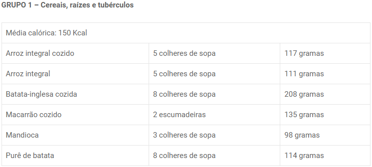 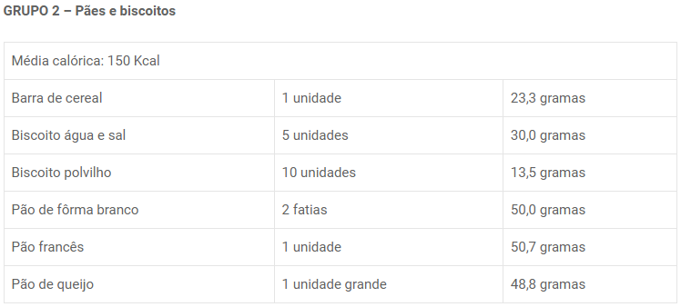 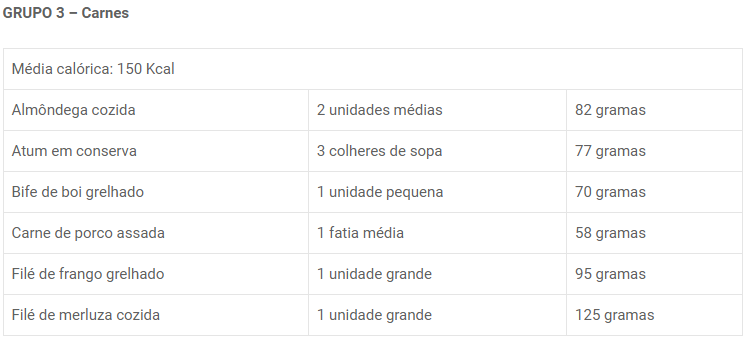 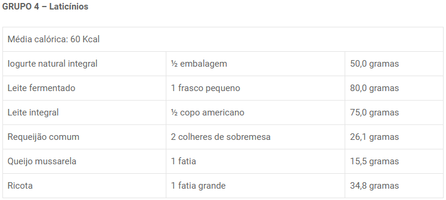 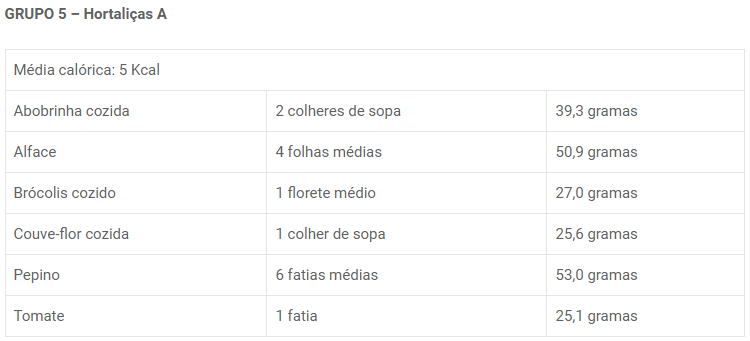 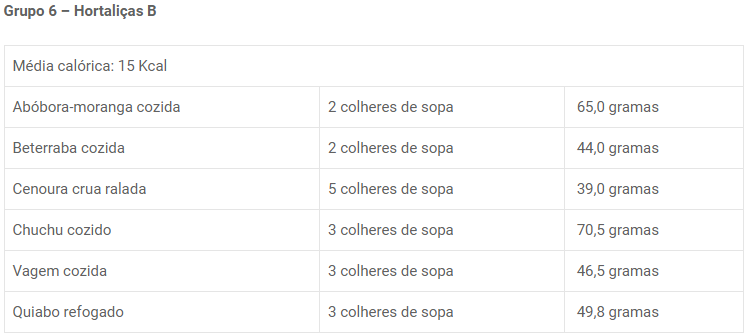 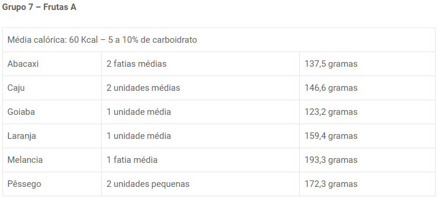 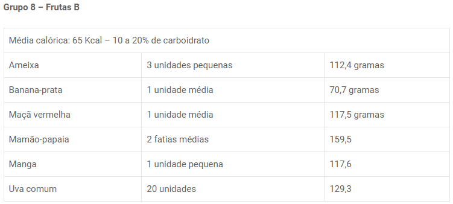 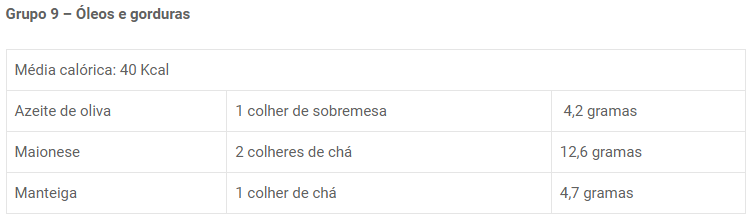 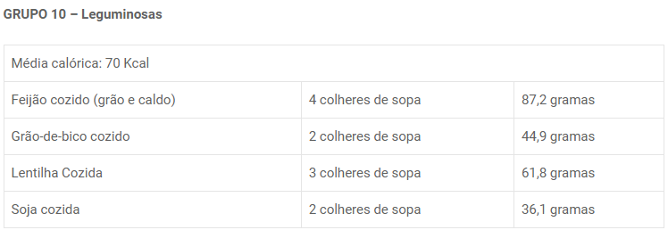 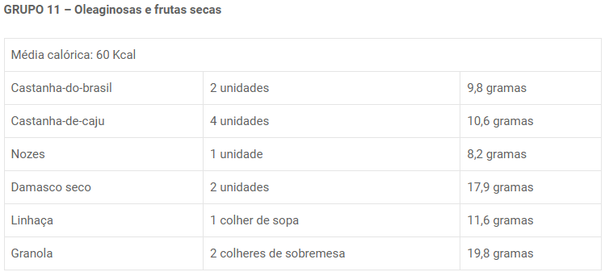conteúdo disponível em: https://blog.dietbox.me